Overview
The Rigid Body Dynamics Library supports a multitude of joints: revolute, planar, fixed, singularity-free spherical joints and joints with multiple degrees of freedom in any combinations.
Fixed joints do not cause any overhead in RBDL as the bodies that are rigidly connected are merged into a single body. For details see Fixed Joints.
Joints with multiple degrees of freedom are emulated by default which means that they are split up into multiple single degree of freedom joints which results in equivalent models. This has the benefit that it simplifies the required algebra and also code branching in RBDL. A special case are joints with three degrees of freedom for which specific joints are available that should be used for performance reasons whenever possible. See 3-DoF Joints for details.
Joints are defined by their motion subspace. For each degree of freedom a one dimensional motion subspace is specified as a Math::SpatialVector. This vector follows the following convention:
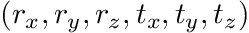
To specify a planar joint with three degrees of freedom for which the first two are translations in 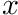 and 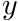 direction and the last is a rotation around 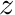, the following joint definition can be used:
- Note
- Please note that in the Rigid Body Dynamics Library all angles are specified in radians.
Fixed Joints
Fixed joints do not add an additional degree of freedom to the model. When adding a body that via a fixed joint (i.e. when the type is JointTypeFixed) then the dynamical parameters mass and inertia are merged onto its moving parent. By doing so fixed bodies do not add computational costs when performing dynamics computations.
To ensure a consistent API for the Kinematics such fixed bodies have a different range of ids. Where as the ids start at 1 get incremented for each added body, fixed bodies start at Model::fixed_body_discriminator which has a default value of std::numeric_limits<unsigned int>::max() /
- This means theoretical a maximum of each 2147483646 movable and fixed bodies are possible.
To check whether a body is connected by a fixed joint you can use the function Model::IsFixedBodyId().
3-DoF Joints
RBDL has highly efficient implementations for the following three degree of freedom joints:
- JointTypeTranslationXYZ which first translates along X, then Y, and finally Z.
- JointTypeEulerZYX which first rotates around Z, then Y, and then X.
- JointTypeEulerXYZ which first rotates around X, then Y, and then Z.
- JointTypeEulerYXZ which first rotates around Y, then X, and then Z.
- JointTypeSpherical which is a singularity free joint that uses a Quaternion and the bodies angular velocity (see Joint Singularities for details).
These joints can be created by providing the joint type as an argument to the Joint constructor, e.g.:
Using 3-Dof joints is always favourable over using their emulated counterparts as they are considerably faster and describe the same kinematics and dynamics.
Floating-Base Joint (a.k.a. Freeflyer Joint)
RBDL has a special joint type for floating-base systems that uses the enum JointTypeFloatingBase. The first three DoF are translations along X,Y, and Z. For the rotational part it uses a JointTypeSpherical joint. It is internally modeled by a JointTypeTranslationXYZ and a JointTypeSpherical joint. It is recommended to only use this joint for the very first body added to the model.
Positional variables are translations along X, Y, and Z, and for rotations it uses Quaternions. To set/get the orientation use Model::SetQuaternion () / Model::GetQuaternion() with the body id returned when adding the floating base (i.e. the call to Model::AddBody() or Model::AppendBody()).
Joint Singularities
Singularities in the models arise when a joint has three rotational degrees of freedom and the rotations are described by Euler- or Cardan-angles. The singularities present in these rotation parametrizations (e.g. for ZYX Euler-angles for rotations where a +/- 90 degrees rotation around the Y-axis) may cause problems in dynamics calculations, such as a rank-deficit joint-space inertia matrix or exploding accelerations in the forward dynamics calculations.
For this case RBDL has the special joint type RigidBodyDynamics::JointTypeSpherical. When using this joint type the model does not suffer from singularities, however this also results in a change of interpretation for the values 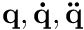, and 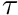:
- The values in 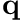 for the joint parameterizes the orientation of a joint using a Quaternion 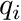
- The values in 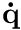 for the joint describe the angular velocity 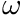 of the joint in body coordinates
- The values in 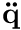 for the joint describe the angular acceleration 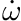 of the joint in body coordinates
- The values in for the joint describe the three couples acting on the body in body coordinates that are actuated by the joint.
As a result, the dimension of the vector is higher than of the vector of the velocity variables. Additionally, the values in are not the derivative of 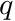 and are therefore denoted by 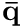 (and similarly for the joint accelerations).
RBDL stores the Quaternions in such that the 4th component of the joint is appended to . E.g. for a model with the joints: TX, Spherical, TY, Spherical, the values of 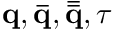 are:
![\begin{eqnarray*} \mathbf{q} &=& ( q_{tx}, q_{q1,x}, q_{q1,y}, q_{q1,z}, q_{ty}, q_{q2,x}, q_{q2,y}, q_{q2,z}, q_{q1,w}, q_{q2,w})^T \\ \mathbf{\bar{q}} &=& ( \dot{q}_{tx}, \omega_{1,x}, \omega_{1,y}, \omega_{1,z}, \dot{q}_{ty}, \omega_{2,x}, \omega_{2,y}, \omega_{2,z} )^T \\ \mathbf{\bar{\bar{q}}} &=& ( \ddot{q}_{tx}, \dot{\omega}_{1,x}, \dot{\omega}_{1,y}, \dot{\omega}_{1,z}, \ddot{q}_{ty}, \dot{\omega}_{2,x}, \dot{\omega}_{2,y}, \dot{\omega}_{2,z} )^T \\ \mathbf{\tau} &=& ( \tau_{tx}, \tau_{1,x}, \tau_{1,y}, \tau_{1,z}, \tau_{ty}, \tau_{2,x}, \tau_{2,y}, \tau_{2,z} )^T \end{eqnarray*}](../../form_169.png)
Numerical Integration of Quaternions
An additional consequence of this is, that special treatment is required when numerically integrating the angular velocities. One possibility is to interpret the angular velocity as an axis-angle pair scaled by the timestep and use it create a quaternion that is applied to the previous Quaternion. Another is to compute the quaternion rates from the angular velocity. For details see James Diebel "Representing Attitude: Euler Angles, Unit Quaternions, and Rotation Vectors", 2006, http://citeseerx.ist.psu.edu/viewdoc/summary?doi=10.1.1.110.5134.